lec-20 SVM
Table of Contents
1 SVM
Hinge loss + kernel = SVM
回忆 Binary Classification
boolean function 作为 loss-fn 没法用 GD 优化那应该换成什么呢？
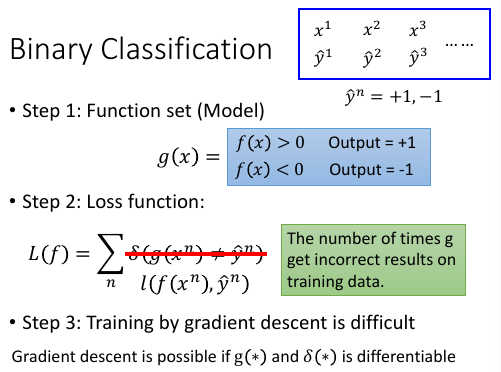
1.1 取代原则
------------------------------------------------- *注意这里的 取代 是 取代 L(f)=Σδ(xxx) 中的 δ* *所以不论用下面哪个函数取代，Loss-fn 都需要加上 和式：Σ* ------------------------------------------------- 我们希望用一种可微分函数 l 来取代 δ， 取代原则是符合 δ 的特性 - 当 y= 1, f(xn)越正越好 - 当 y=-1, f(xn)越负越好 ===> 不论 yn 是多少，ynf(xn)越大越好 ===> 取代原则： *越往右，ynf(xn)越大，loss 越小* 只要符合这个【取代原则】的 fun 就可以 取代 loss-fn ------------------------------------------------- *注意这里的 取代 是 取代 L(f)=Σδ(xxx) 中的 δ* *所以不论用下面哪个函数取代，Loss-fn 都需要加上 和式：Σ* -------------------------------------------------
1.1.1 square loss
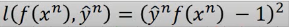
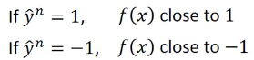
根据这个公式，min loss = 0, 当 y= 1,如何能得到最小值呢？需要模型的预测值 f(x) -> 1 当 y=-1,如何能得到最小值呢？需要模型的预测值 f(x) ->-1 但是 square error 用在贰元分类是不合理的，看函数图像 *越往右，ynf(xn)越大，loss 也越大* *larger value, larger loss*
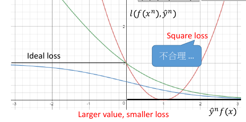
1.1.2 sigmoid+square loss
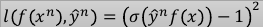
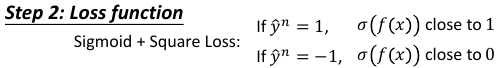
根据这个公式，min loss = 0,
当 y= 1,如何能得到最小值呢？需要 σ(f(x)) ->1 ,所以只要模型的预测值 f(x) ->+∞
当 y=-1,如何能得到最小值呢？需要 σ(f(x)) ->0 ,所以只要模型的预测值 f(x) ->-∞
sigmoid + square error 用在贰元分类是合理的，
符合 *越往右，ynf(xn)越大，loss 越小*
*larger value, smaller loss*
但是 *函数‘太懒’* ,用 GD 优化效果不好。
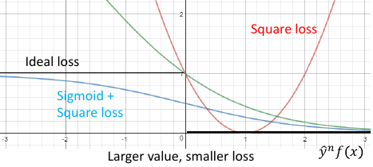
1.1.3 sigmoid+cross entropy loss
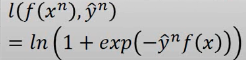
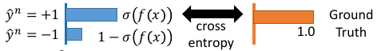
根据这个公式，min loss = 0,
当 y= 1,如何能得到最小值呢？需要 exp(-f(x)) ->0,所以只要模型的预测值 f(x) ->+∞
当 y=-1,如何能得到最小值呢？需要 exp(f(x)) ->0,所以只要模型的预测值 f(x) ->-∞
sigmoid + cross entropy 用在贰元分类是合理的，
符合 *越往右，ynf(xn)越大，loss 越小*
*larger value, smaller loss*
*函数‘勤奋’* ,用 GD 优化效果好。
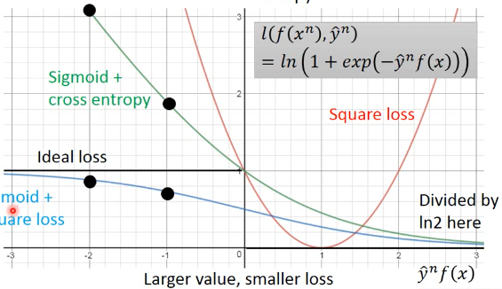
1.1.4 why Sigmoid+Cross entropy Better than Sisgmoid+square
看从 -2 -> -1, ss.loss 的减少量 < sce.loss 的减少量
当我们用 GD 来优化 loss-fn 的时候，
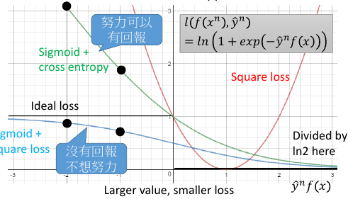
1.1.5 hinge-loss
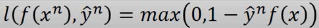
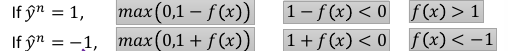
根据这个公式，min loss = 0,
当 y= 1,如何能得到最小值呢？需要 1-f(x)<0 ,f(x)> 1
当 y=-1,如何能得到最小值呢？需要 1+f(x)<0 ,f(x)<-1
符合 *越往右，ynf(xn)越大，loss 越小*
*larger value, smaller loss*
*函数‘勤奋’* ,用 GD 优化效果好。
相比与其他 loss-fn hinge-loss 对预测值的要求不高，只需要 f(x)>1 or <-1
也就是 y*f(x) > 1 即可得到最小的 loss.
按照 二元分类 的标准，只要 ynfx 同号，
亦即 y*f(x)>0，他就是分对的，
但当 0< y*f(x) <1 的时候，他的 loss 却不是最小值 0
所以 hinge-loss 的意思是，仅仅是【同号】还不够行，这时 loss 还不是最小
还需要【好过一段距离】，这段距离就是 penalty 惩罚量。
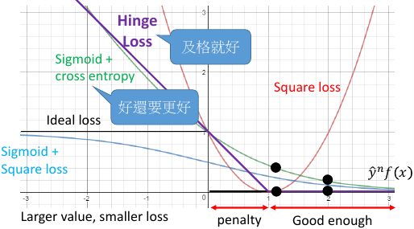
我觉得 loss-fn 的设计是掌控 model 这台计算机的关键： hinge 很好的解决了，square loss 的 larger value larger loss 的问题。同时，还给出了 ss sce 都没有给出的一个 penalty 区间，不仅要分对，还要分好，分析 hinge 是如何在原有分对的基础上，又加入更高要求的。
为甚么是 1-yf(x)?
因为 boolean loss-fn 无法微分，就无法通过 GD 去寻找最优解。
我们的目标不是创造 loss-fn 而是找到一个 boolean loss-fn 的近似，所以这个
近似不能比 boolean loss-fn 小，而应该是一个 boolean loss-fn 的 upbound
最好是一个 tight upbound. 所以这里是 '1'
min max(0, 1 - yn*f(xn))
argmin_fg Σ max(0, k - f*g_m=n + f*g_m≠n)
对比分析上一次遇到类似的 max(0, xxx)的函数
区间控制：{类间大}{类内小} tip
>>> 区间控制：[类间大][类内小] tip ------------------------------------------------------------- 注意：argmin_fg Σ||fx - gx || 是没有考虑 [类间大] 的。 看看李老师是如何改进这个 loss-fn 的 argmin_fg Σ max(0, k - f*g_m=n + f*g_m≠n) [类间大]这个间距似乎就是 svm 的强项 我们 hold 住了 loss-fn 的最小值，lossfn 最小为 0 丈夫跟自己的老婆的距离有多近呢？ k - f*g_m=n + f*g_m≠n < 0 => f*g_m=n - f*g_m≠n > k 丈夫跟不是自己老婆的所有女人中关系最近的哪一个的关系，比跟自己老婆的关系都要 远一个 k 这个函数经典，张弛有度： 首先这个函数是要越小越好，所以比较大的都会被干掉，比如 k - f*g_m=n + f*g_m≠n > 0, 说明【跟配偶之外的异性关系暧昧】越暧昧这个值越大 就越会被干掉。 其次，f*g_m=n - f*g_m≠n 这个值不是越大越好么，最好无限大，‘水至清则无鱼’有可能 一个点都找不到。所以设置了一个阈值，只要比这个阈值大就是可以接受的。 所以想要 hold 住一个【区间】就是用这个函数： max(0, 阈值－距离) --------------------------------------------------------------------
1.1.6 hinge loss compare with sigmoid+cross entropy
两者最大的不同就在于，他们对【已经做好的 fx】的态度是不同的如果把 yf(x) 的值从 1 移动到 2: 对于 sce 来说你可以得到 loss 的下降，所以 sce 的态度是：好还要更好对于 hinge 来说呢的 loss 是不动的，所以 hinge 的态度是：及格就好
两者 learn 的结果相仿，并没有差很多
hinge 有一个独特的好处是，hinge 不害怕 outlier, learn 出的结果比较 robust
1.2 Linear SVM
深度神经网络用 SVM : Yichuan Tang , “Deep Learning using Linear Support Vector Machines”, ICML 2013 Challenges in Representation Learning Workshop SVM 与 logistic regression 唯一地区别就是 loss-fn 不同 logistic 用 cross-entropy SVM 用 hinge
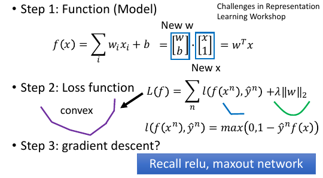 虽然有很多棱角，但是这个函数依然可以用 GD 来做，回忆ReLU, maxout SVM 是可以用 GD 来 train 的
1.3 Linear SVM - Gradient Descent
一般的教授都会告诉你 SVM 是不能用 GD 做优化的，但其实可以。 微分结果会是一个【条件函数】。
max(0,1-yf(x)) 对 wi 进行微分：
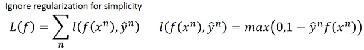
只有 f(x) 与 wi 有关，所以利用 chain-rule, l = max(0, 1-yf) ∂l/∂wi = ∂l/∂f * ∂f/∂wi
1.4 证明 SVM 可以用 GD 优化
1.4.1 1) ∂f/∂wi = xi
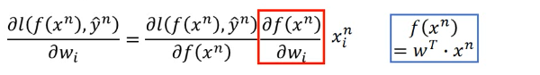
只有 f(x) 与 wi 有关，所以利用 chain-rule, ∂l/∂wi = ∂l/∂f * ∂f/∂wi ∂f/∂wi = xi, 因为在 f(x) 中 wi*xi 只有 xi 与 wi 有关。 ∂f/∂wi = xi
1.4.2 2) ∂l/∂f = cn(w)
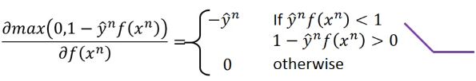
∂max/∂f 要分情况讨论，但依然是可以求出来的。 当 ynf(xn) < 1 , ∂max/∂f= -y 当 ynf(xn) else, ∂max/∂f= 0
1.4.3 3) 整合 1) 2)
用 boolean 表达式整合两者，代入 Loss-fn 中
l = max(0, 1-yf)
∂l/∂wi = ∂l/∂f * ∂f/∂wi
= cn(w) * xi
∂L(f)/∂wi = Σcn(w) * xi
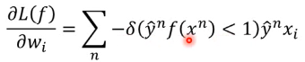
1.4.4 4) 更新 wi
把最后结果用记号 cn(w) = boolean*yn，更新 wi
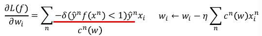
------------------------------------------------- *注意这里的 取代 是 取代 L(f)=Σδ(xxx) 中的 δ* *所以不论用下面哪个函数取代，Loss-fn 都需要加上 和式：Σ* -------------------------------------------------
所以最后可以证明，linear SVM 是可以用 GD 优化的。
[qqq] ----------------------------------- GD 不是对整个 w 微分么？ 纯粹扯蛋，记错了 ·「总结」 GD 的每一个 wi 都用【相同】的 ηi GD 的每一个 wi 都用【不同】的 ηi ===> Adagrad GD 的每一个样本分开做 update ===> SGD 这是我之前对 GD,SGD,Adagrad 的完全错误的理解 我以为 GD 是整个微分 w 然后选择下一个点，其实 这么想并不对，w 是一个高维度向量，下一个 w 也 必然是高维度的向量，这个向量就是一个点，而这个点的 确定，需要由（w1,w2,w3...）来共同决定，每一个 wi 只是决定了他在某一个坐标轴上的位置，所有 wi 一齐决定 了 w 这个向量这个点的位置。 ---------------------------------------------
1.5 Linear SVM - QP
传统的方法是这样的在 SVM 中发现 QP 的踪迹
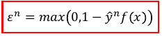
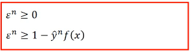 单独看上面两个式子，他们的意义式不一样的因为 2) 式给出的 ξ 可取的值没有上界。
但是当加上 [Minimizing] 之后两者就完全一样了，
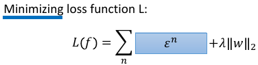
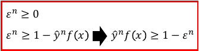
这样整体看，就可以使用 QP 来优化了，
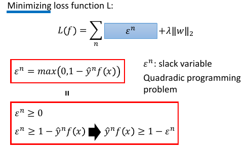 其中 ξn 叫做 slack variable
1.6 Dual Representation(lihongyi 解释，很简单)
关于 Kernel Mapper, 最需要你理解的就是：我们找出来的最优 weight,实际上就是 所有样本点的线性组合,
weitht = linear combiantion of data points w = Σαnxn
这是一个很难理解的事情，通常的做法是：用拉格朗日乘数法，解刚才的式子，然后就可以看到这个结果。但是也可以有其他的解释方法：
1.6.1 Dual 转换 转换前的 3 steps
1.7 新视角解释 Dual
1.7.1 解释最优权重与样本点的线性组合关系
但是也可以从另一个角度来解读：利用 GD 的思想：核心就是下面这个 cn(w),这也是刚才要写成这样的原因
可以看到 w 的每个位的更新，都是所有点的某个同样位的某个表达式如果把 wi 全不串起来，形成一个向量，这个表达式会是这样的：
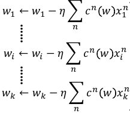
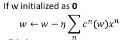
如果我们假设 w 的初始值是 0,那么整个 w 就可以表示成所有样本点的线性组合。 而 cn(w) 就是 αn w* = Σαn xn w* = ηΣcn(w)xn 所以，这个可以大概解释： *最优权重是所有样本点的线性组合*
1.7.2 解释支持向量，离群点，与模型鲁棒性
刚才说过，cn(w) 就是 αn, 而 cn(w)
>>> GD of SVM
------------------------
l = max(0, 1-yf)
∂l/∂wi = ∂l/∂f * ∂f/∂wi
= cn(w) * xi
∂L(f)/∂wi = Σcn(w) * xi
------------------------
cn(w) 就是 max(0, 1-yf) 的微分，通过之前看过的 max(0,1-yf)
的图像，可以知道： *cn(w) 经常是 0*
>>> chain-rule of ∂l/∂f: ∂max/∂f
-----------------------------------
∂max/∂f 要分情况讨论，但依然是可以求出来的。
当 ynf(xn) < 1 , ∂max/∂f= -y
当 ynf(xn) else, ∂max/∂f= 0
-----------------------------------
1.7.3 解释支持向量 SV
cn(w) 经常是 0 也就是说 αn 经常是 0 αn 形成的权重矩阵是 sparse 的
之前解释过： 最优 w 是 样本点的线性组合，而样本点的权重 αn 经常是 0, 所以
有很多样本点对于形成最优 w 没有任何贡献 把那些 αn 不为零的样本点－－有贡献的样本点叫做 SV:suport-vector
1.7.4 解释离群点的鲁棒性
对于最优解有共享的样本点只是其中一部分 αn≠0 的点。所以，样本点中有很多是无关风月的－－－有跟没有一样。所以如果样本集中存在【离群点】，他也有很大可能是这种【有跟没有一样】的点。所以，整体模型训练出的结果并不会因为他们的存在而出现较大变动－－－这就是对【离群点的鲁棒性】离群点是某些样本点，鲁棒性是说我不 rou 你。
1.7.5 对比 logistic regression 理解鲁棒性
逻辑回归使用 cross-entropy 作为 loss-fn,他的 loss 函数图像显示他没有一个地方是微分为 0 的。下面这个式子可以是 GD 的原理式，每一个使用 GD 的模型，都可以归结到这幾個式子中去。 ∂l/∂f=cn(w) 也就是 loss-fn 的微分结果。看下图【绿色图像】就是 逻辑回归 的 loss-fn 图像，他的微分结果不可能等于 0.
>>> GD of SVM
------------------------
l = max(0, 1-yf)
∂l/∂wi = ∂l/∂f * ∂f/∂wi
= cn(w) * xi
∂L(f)/∂wi = Σcn(w) * xi
------------------------
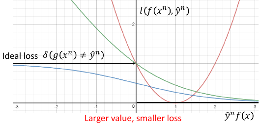
∂l/∂wi = ∂l/∂f * ∂f/∂wi
= cn(w) * xi
也就是说，每一个 x 都会对最终结果 w* 有贡献，所以每个点都会被考虑进来。所以逻辑回归是很容易受到离群点的影响的。
1.7.6 [总结]:如何判断模型对于离群点的鲁棒性
采用 GD 优化的模型，直接画出器 loss 对于 ynfn 的函数图像，凡是图像中不存在斜率为 0 的。就代表那个模型会考虑所有的样本点，那么他对于离群点的鲁棒性就很差。
>>> loss-fn 真是 key of ML: -------------------------------------------------------------- 之前是任何对模型的要求【one-shot 类间大，类内小】【svm 分对还要分好】都可以 塞进 loss-fn 中，现在模型整体的【离群点鲁棒性】也可以通过设计 loss-fn 实现。 --------------------------------------------------------------
1.7.7 引入核函数
结合这两个式子，重新观察 f(x) ---------------- w* = Σαnxn = αX f(x) = wT•x ----------------
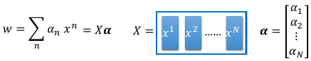
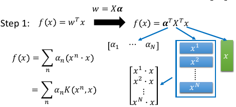
f(x) = wT•x
= αT•XT•x
= [α1,α2,α3,α4...] - - x
\x1\ α1 是第一个样本点的权重，是一个数
\x2\ 这里 [x1,x2..] 是第所有样本点形成的矩阵
\x3\ 最右边的 x 是新输入的测试点，是一个向量
\x4\
\x5\
- -
f(x) = Σαn(xn•x)
>>> f(x) = Σαn(xn•x) ------------------------------------------------------------------------------ 对于这(xn•x)个表达式有两点疑问： 每一个样本点都要与新的测试点做内积，样本点很多的话太耗时 1) 不担心：只有 SV 参与计算，因为 αn 有很多都等于 0, 所以只要挑选那些 αn≠0 的点计算(xn•x) 2) 不担心：因为 Kernel 还可以化简 (xn•x) ------------------------------------------------------------------------------
基于以上两个理由： ----------------------------------------------------------- n -> n' : n' 表示所有的 SV (xn•x) -> K(xn,x) : K 表示核函数，可以优化(xn•x)的运算 f(x) = Σαn(xn•x) -> Σαn'K(xn', x) ----------------------------------------------------------- come on! *Σαn'K(xn', x)* *Σαn'K(xn', x)* *Σαn'K(xn', x)* *Σαn'K(xn', x)*
1.7.8 Dual 转换 转换前后 3steps 对比
Dual 转换 转换后的 3 steps
Dual 转换 转换后的 3 steps
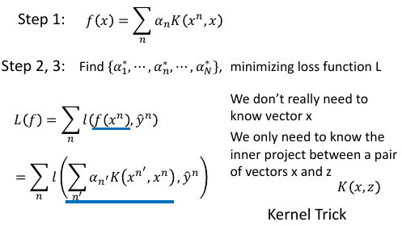
原来是求最优的 w ,现在的 f: f(x) = Σαn(xn•x) 只有 αn 是未知的, 所以下面的事情就是把 新的 f(x) 代入原来的 loss-fn 中，
L(f) = Σl(f,y) f(x) = wT•x f(x) = Σαn'K(xn', x)
得到新的 L(f) 未知数从 w -> α这样就可以通过 QP or GD 来优化新的 loss-fn,得到最好的 α所以不用知道新的测试点是什么，而只需要知道 K(xn',x) 是多少即可
1.8 Kernel Trick
注意到： ------------------- L(f) = Σl(f,y) f(x) = wT•x f(x) = Σαn(xn•x) f(x) = Σαn'K(xn', x) -------------------
这样的转换不仅仅是 SVM 可以用， -------------------------------------- 其他所有以 f(x) = wT•x 的形式来表示 Hypothesis Set 的模型都可以使用 优化目标的改变：w ---GD---> cn(w)=αn 内积计算的改变：(xn•x) ---> K(xn, x) 跟 SVM 的 K(xn', x) 不同，SVM 只用 SV 点 而其他的模型可能要用到所有的点。 --------------------------------------
1.9 Non-linear SVM: Kernel
之前说过，想用 linear-model 来处理 non-linaer 的问题，由于 linear-model 的诸多限制，需要先对 dataset 做 transform, 在 NN 中我们就是用很多的隐含层来做这个 transform 的。
注意 transform 并不是【降维】，SVM 的 transform 是要【升维】，要在更高维度的空间中使用 linear-model 来解决 原始低纬度空间中的 non-linear 问题。

1.9.1 发现 Kernel, 解决 non-linear
>>> Kernel 本质 --------------------------------- 高维空间的内积，转换为原始空间内积的平方 --------------------------------- 但是升维之后用 SVM linear 来做有一个有点耗时的东西：内积 xn•x
>>> f(x) = Σαn(xn•x) ------------------------------------------------------------------------------ 对于这(xn•x)个表达式有两点疑问： 每一个样本点都要与新的测试点做内积，样本点很多的话太耗时 1) 不担心：只有 SV 参与计算，因为 αn 有很多都等于 0, 所以只要挑选那些 αn≠0 的点计算(xn•x) 2) 不担心：因为 Kernel 还可以化简 (xn•x) ------------------------------------------------------------------------------
升维之后内积更难搞，但是通过化简，发现【升维内积与原始空间内积】一个很好的数学特性：
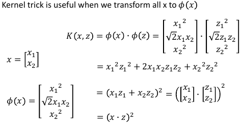 注意Φ转换，Φ转换的目标就是把原来 2 维度空间，转换成 3 维度空间，如何转换呢？构造新的坐标轴，如何构造呢？（参考林轩田老师的 ppt），就是原始空间中 [任何两个坐标都要产生关系]
---------------------------- K(x,z) = (x•z)^2 = Φ(x)•Φ(z) ----------------------------
Directly computing K x, z can be faster than “feature transformation + inner product” sometimes.
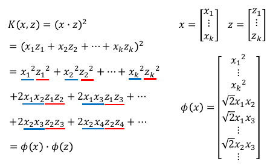
1.9.2 SVMKernel 证明
把上图中所有 x-蓝色 放到一边，所有的 z-红色 放到一边，恰好就形成了 Φ(x)•Φ(z)
Kernel 还可以应用到 RBF(redial basis function)
回忆一下刚才的 SVM-kernel 过程：原始空间 non-linear 问题，通过升维转换到 Φ 空间，在那个空间中原始问题变成 linear 的，我可以通过 SVM 来做，但是 SVM 中虽然有 SV 来帮助简化 (Φ(x)•Φ(z)) 的运算，但是运算量仍旧很大，又察，Φ(x)•Φ(z) = (x•z)2 = K(x,z)名之 Kernel, 遂通过 Kernel 再次化简升维后的内积 为 原始空间内积的平方。
------------------- x --> Φ(x); ---trans: f(x) = wT•Φ(x) ---Dual: f(x) = Σαn(Φ(xn)•Φ(x)) ---SV: f(x) = Σαn'(Φ(xn')•Φ(x)) ---svmKernel: f(x) = Σαn'K(xn', x) ---min L: L(f) = Σl(f,y) ==> αn -------------------
1.9.3 RBF 也有自己的 Kernel: RBFKernel
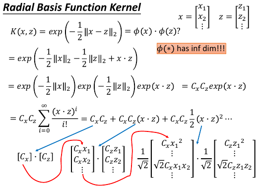 推导要点：
- CxCzexp(x•z) -—>Taylorexpansion—> CxCzΣxxx
- 最后泰勒展开的和式，跟 SVM kernel 推导一样：把 'x' 的移到一边，‘z’的移到另一边就组成了一个无限长的 Φ(x),Φ(z)
RBFKernel 是能快速计算无限维空间中的 linear-model 中的内积但是无穷维太强，太容易 overfitting
>>> many kernels ---------------------------------------------------------- svmKernel: Φ(x)•Φ(z) = (x•z)^2 = K(x,z) RBFKernel: Φ(x)•Φ(z) = exp(-1/2*||x-z||_2) = K(x,z) SigmoidKernel: Φ(x)•Φ(z) = tanh(x•z) = K(x,z) Kernel 的本质是什么，就是投影到高维空间的【内积】, 所以 Kernel 天生具有【度量向量相似性】的基因。 ----------------------------------------------------------
1.9.4 Sigmoid Kernel
• When using sigmoid kernel, we have a 1 hidden layer network. • The weight of each neuron is a data point • The number of support vectors is the number of neurons.
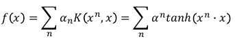
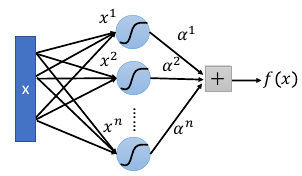
1.9.5 直接设计核函数
structure: sequence, tree, etc.
You can directly design K(x,z) instead of considering φ(x), φ(z) When x is structured object like sequence, hard to design φ(x) K(x,z) is something like similarity (Mercer’s theory to check)
如果原始空间的样本 x 是一个 structure object 的话，是很难把他们定义成一个 vector 的。 eg, sequence structure 每一个 序列 因为长度可能不一样，所以很难用 vector 去描述他们，所以根本不知道这个 φ(x) 是什么样子。但是我们可以跨过 φ(x) 这一步直接定义 Kernel.因为 Kernel 就是 φ 空间里的内积，他就是 φ 空间中两个向量的相似性度量。 所以不用知道 φ，只要大概知道如何算两个 structure 的 similarity,就能把 similarity 当作一个 Kernel 来使用。
如何确定是不是存在两个向量，他们做内积就是我定义的 Kernel 呢？通过 Mercer's Theory
假设今天要分类的是 Audio Segment：判断语者的情绪，情绪从狂喜到悲痛分成 10 个级别每一段声音讯号，都用 vector sequence 来表示，x 每一段声音讯号长度都不一样，所以 vector sequence 也不一样长
[普通做法]: 单纯在声音讯号的空间内是没法分的，要先做升维 x->φ，到高维空间中在做分类 [定义核函数]: Evaluate the similarity between sequences as K(x,z)
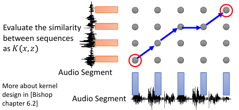
这一题的 reference: Hiroshi Shimodaira, Ken-ichi Noma, Mitsuru Nakai, Shigeki Sagayama, “Dynamic Time-Alignment Kernel in Support Vector Machine”, NIPS, 2002 Marco Cuturi, Jean-Philippe Vert, Oystein Birkenes, Tomoko Matsui, A kernel for time series based on global alignments, ICASSP, 2007
1.10 SVM related methods
• Support Vector Regression (SVR) • [Bishop chapter 7.1.4] SVM 做 regression: 原来做 regression 的时候希望 y 与 y' 越接近越好， SVR 不是这么做：只要 y' 进入 y 的距离半径之内，error 就是 0 • Ranking SVM • [Alpaydin, Chapter 13.11] 常常用在，排序是一个 list 的时候，简单说比如 regression 问题的输出是一个 list 每一个位表示是一个概率，取概率最大的作为最终结果。但是这样做，你并没有直接优化你的问题其实可以直接考虑这个 list 的 ranking. • One-class SVM • [Alpaydin, Chapter 13.11] 希望说 属于 positive 的 example 都聚成一类，negative 的 example 都散布在其他地方。
1.11 DeepLearning 与 SVM
SVM 的 Kernel 是 leanable 的。但是没有 DeepLearning 那么灵活，需要列出一堆备选 Kernels,然后学出每个 Kernel 的权重，做 linear combination. 这个动作其实有点像是，两个 hiden-layer 的 NN.
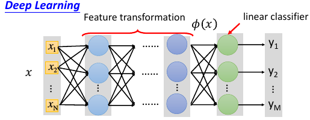
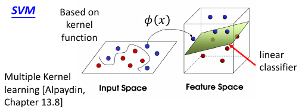